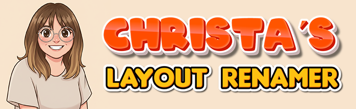

Automatically classifies images based on human presence, environmental photography and isolated product photography.
Click to select images,
drag & drop images here,
or paste from clipboard
(Ctrl+V / Cmd+V)
By Guillermo Navarrete